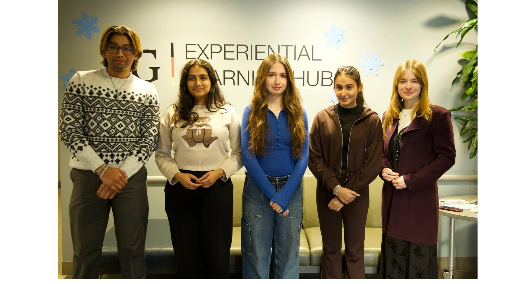

Summer & Fall 2025
Systems Support Technician
Experiential Learning Hub, University of Guelph | May – December 2025
Click to view work term report
Summer & Fall 2025
Systems Support Technician
Experiential Learning Hub, University of Guelph | May – December 2025
Click to view work term reportIntroduction
This website provides a glimpse into my co-op work experience completed from May to December 2025 across two consecutive work terms (Summer 2025 – S25 and Fall 2025 – F25) at the Experiential Learning Hub (EL Hub), University of Guelph, where I worked as a Systems Support Technician.
What I hope readers will take away is how this extended experience evolved into a continuous learning journey that supported my growth both professionally and academically.
Throughout this period, I supported the Experience Guelph platform, which connects students, employers, and faculty through job postings and recruitment processes. My responsibilities included managing Experience Guelph support tickets, responding to student, employer, and faculty inquiries, and providing in-person IT support to EL Hub staff. I also escalated technical issues to Computing & Communications Services (CCS), the University’s central IT department, when required.
During S25, my focus was on learning core systems, understanding workflows, and building confidence through hands-on troubleshooting and documentation, including the creation of the student user guide for Experience Guelph. As I transitioned into F25, I took on increased responsibility by independently managing tickets and in-person support requests, leading a successful digital clean-up initiative, and updating employer and faculty advisor user guides. In addition, I documented repetitive tasks and recurring processes to support knowledge transfer and ensure that future co-op students could onboard more efficiently and work more independently.
This report shares my experiences, goals, and reflections across both work terms, highlighting how this extended role allowed me to grow from a learner into a confident and reliable contributor while building a strong foundation for future co-op experiences.
Employer
The Experiential Learning Hub (EL Hub) at the University of Guelph is the central department that connects students, employers, and faculty through career development and experiential learning opportunities. The EL Hub supports a wide range of initiatives, including Co-operative Education, Career Education, and the university's primary recruitment platform, Experience Guelph.
Through Experience Guelph, the EL Hub supports a broad user base by providing access to job postings, workshops, appointments, and career resources. Students can explore a variety of opportunities, including co-op positions, on-campus and off-campus jobs, volunteer roles, and opportunities available to graduate students and alumni.
Experience Guelph also offers features such as appointment booking for career and co-op advising, peer support, and registration for events and workshops. In addition, the platform provides access to user guides and resources that help users navigate experiential learning requirements and career planning more effectively.
A key component supported through Experience Guelph is the Professional and Career Development Record (PCDR), which allows students to track their skill development and reflect on experiences gained through co-op, work, and co-curricular activities.
During my co-op work experience, I supported the EL Hub by helping to maintain the Experience Guelph platform and assisting staff, students, and employers with technical and administrative inquiries. This role allowed me to contribute to the smooth operation of a system that supports experiential learning across the University of Guelph.
Goals & Reflection
This section summarizes my learning goals and reflections, organized by work term. The first set outlines my goals and takeaways from Summer 2025 (S25), followed by my goals and reflections from Fall 2025 (F25). Keeping the structure consistent helps show my growth across terms while connecting each goal to my day-to-day work.
The goals below were created for my S25 work term and focus on building a strong foundation in troubleshooting, communication, time management, and confidence.
Goal/Outcome: Gain hands-on experience and improve independent troubleshooting.
Skills to Learn: Resolve Experience Guelph tickets more independently; create helpful documentation.
Connection to Job Tasks: Directly related to managing tickets and supporting staff/students.
Reflection: Documenting steps and using available resources increased my confidence; I was able to solve more issues independently and created student-focused documentation that improved clarity for users.
Goal/Outcome: Improve independent problem solving during challenging situations.
Skills to Learn: Test solutions before escalating and make stronger technical decisions with less supervision.
Connection to Job Tasks: Aligns with troubleshooting user issues and supporting staff requests.
Reflection: Trying multiple approaches and comparing issues with past cases helped me become faster and more independent by the end of the term.
Goal/Outcome: Improve written communication in ticket responses and documentation.
Skills to Learn: Write clear, concise, and professional replies; create easy-to-follow guides.
Connection to Job Tasks: Core to ticket replies and user documentation.
Reflection: Improving clarity in responses reduced back-and-forth and helped users resolve questions faster.
Goal/Outcome: Strengthen time management to meet deadlines consistently.
Skills to Learn: Prioritize tasks, track progress, and balance multiple responsibilities.
Connection to Job Tasks: Applies to ticket queues, documentation, and daily workload planning.
Reflection: Setting priorities and tracking tasks helped me stay consistent, even during busy weeks.
Goal/Outcome: Build confidence communicating professionally and sharing ideas.
Skills to Learn: Speak up in meetings, ask questions, and seek feedback.
Connection to Job Tasks: Supports collaboration and taking initiative in day-to-day work.
Reflection: Regular check-ins and feedback helped me become more comfortable participating and taking initiative.
The goals below were created for my F25 work term. This term built on the foundation from S25, with added focus on department-wide initiatives, improved documentation, and long-term process support.
Goal/Outcome: Improve accuracy and independence when troubleshooting Experience Guelph, TACTIC, and in-person hardware/software issues.
Skills to Learn: Stronger troubleshooting habits, clearer escalation notes, and practical experience with office and boardroom setups.
Connection to Job Tasks: Supports both ticket-based work (Experience Guelph) and in-person technical support requests from staff.
Reflection: Over the term, I solved more issues independently by reviewing past tickets, using OneNote documentation, and testing fixes before escalating. I also gained more confidence supporting staff in person and documenting solutions clearly for follow-ups.
Goal/Outcome: Strengthen decision-making by identifying and testing solutions independently before escalating.
Skills to Learn: Compare issues to past cases, try structured troubleshooting steps, and validate fixes with testing.
Connection to Job Tasks: Applies to technical investigations, resolving recurring issues, and supporting operational tasks.
Reflection: By documenting my troubleshooting steps and reflecting on outcomes, I became more confident choosing the right fix and knowing when escalation was truly needed.
Goal/Outcome: Improve written communication through stronger documentation and clearer ticket responses.
Skills to Learn: Write concise ticket updates, update and maintain guides, and keep documentation consistent.
Connection to Job Tasks: Supports maintaining employer and faculty advisor user guides and writing clear responses for tickets and requests.
Reflection: In F25, I strengthened my communication by updating user guides and keeping documentation clearer and easier to follow for a wider audience.
Goal/Outcome: Improve productivity and consistency by organizing tasks, tracking progress, and meeting deadlines efficiently.
Skills to Learn: Prioritize across tickets, in-person requests, and documentation; maintain steady turnaround times.
Connection to Job Tasks: Important for balancing technical support, documentation, and ongoing projects.
Reflection: I managed priorities and deadlines more consistently, even during busy periods. While I still want to improve my use of tools like Microsoft Planner, I maintained a reliable workflow and stayed organized across tasks.
Goal/Outcome: Create clear documentation for repetitive tasks to support future co-op students and improve team continuity.
Skills to Learn: Write step-by-step process notes, organize documentation logically, and update content based on feedback.
Connection to Job Tasks: Supports long-term process improvement, onboarding, and reducing repeated questions for common tasks.
Reflection: Documenting repetitive workflows helped make tasks easier to repeat and reduced confusion during handoffs. It also created a stronger reference for future students joining the team.
During my Fall 2025 co-op term, my learning goals focused on strengthening my technical independence, problem-solving skills, written communication, and overall professional confidence. I intentionally developed goals that aligned closely with my day-to-day job tasks, including resolving Experience Guelph tickets, providing in-person technical support, maintaining documentation, and supporting ongoing operational processes.
A key skill I aimed to develop was independent troubleshooting across both software platforms such as Experience Guelph and TACTIC, as well as physical hardware setups in offices and boardrooms. I also focused on documenting repetitive tasks clearly so that solutions could be reused and understood by future co-op students. These skills will benefit my next work term by allowing me to onboard more quickly and contribute with greater independence.
Throughout the term, I worked with ticketing systems, Microsoft tools including OneNote, Teams, and Outlook, and a variety of office and boardroom technologies. Gaining experience with these tools helped me understand how technical systems support daily operations and reinforced the importance of clear documentation and communication.
Reflecting on my goals, I successfully completed most of them by the end of the term. I became more confident resolving issues independently, improved the clarity of my documentation, and managed my workload more effectively. While I continue to improve my use of advanced planning tools such as Microsoft Planner, I made meaningful progress in prioritizing tasks and meeting deadlines.
Job Description
Overview of My Role
As a Systems Support Technician at the Experiential Learning Hub, my role combined technical troubleshooting, system support, and documentation work in support of the Experience Guelph platform and the day-to-day IT needs of staff. Across both work terms, I worked with students, employers, faculty, and internal staff to resolve technical issues, improve system accessibility, and support ongoing departmental initiatives.
While the core responsibilities remained consistent across Summer 2025 (S25) and Fall 2025 (F25), the scope of my work expanded over time—from learning and executing technical support tasks to contributing to long-term documentation and process improvement projects.
1A unique start to the role:
I had expected my co-op to begin with formal training, but due to circumstances, I was brought into the team’s work right away. While this was an unexpected start, it quickly taught me the importance of being adaptable. Instead of observing, I was contributing from day one, which helped me build confidence and reinforced that flexibility and teamwork are just as critical as technical knowledge in a real workplace.
2Interesting aspect of my job:
One of the most interesting aspects of this role was experiencing Experience Guelph from the support side. As a student, I had previously submitted tickets for help; during this term, I became the person responding to those same types of requests. This shift gave me a deeper appreciation for system workflows and user needs.
Summer 2025 (S25): Learning & Foundations
During Summer 2025, my focus was on building a strong foundation in technical support and understanding the systems used within the Experiential Learning Hub.
I worked extensively on:
- Investigating and resolving Experience Guelph support tickets
- Responding to student and employer inquiries
- Troubleshooting login issues, navigation problems, and access requests
- Providing in-person IT support to staff, including laptops, phones, and boardroom technology
- Escalating complex issues to Computing & Communications Services (CCS) when required
In addition to technical work, I began contributing to student-facing documentation, including user guides and tip sheets, to help improve clarity and accessibility for users.
Fall 2025 (F25): Growth, Projects & Process Improvement
During Fall 2025, I built on the technical foundation developed in S25 and took on greater responsibility in documentation, process support, and department-wide initiatives.
In this term, my role expanded to include increased independence in troubleshooting, ownership of recurring tasks, and leadership in longer-term projects. I played a lead role in the Digital Cleanup Project, working on the initiative from planning through execution. This included designing workflows, preparing guides and messaging, coordinating cleanup activities, and supporting staff throughout the process.
Taking responsibility for the project end-to-end strengthened my leadership, organization, and communication skills, while reinforcing the importance of planning, clarity, and collaboration when managing initiatives that impact a large group of users.
Alongside project work, I continued updating and maintaining student, employer, and faculty advisor user guides, creating internal documentation for future co-op students, and supporting both ticket-based and in-person technical requests.
Skills I Used and Developed
Across both work terms, this position required and strengthened skills in problem solving, technical troubleshooting, organization and time management, written and verbal communication, and documentation and process design. I also developed stronger technical knowledge across multiple systems and workplace tools, and strengthened leadership by taking ownership of longer-term initiatives such as the Digital Cleanup Project and supporting it from planning through execution.
Some of these skills were first introduced in coursework (such as structured problem solving and documentation), while others were developed through hands-on experience. Over time, I became more confident analyzing issues, escalating effectively, and communicating solutions clearly to both technical and non-technical users.
Co-op Work Term Statistics (May–December 2025)
The following statistics reflect my combined contributions across Summer 2025 and Fall 2025:
- 580+ Experience Guelph tickets resolved
- 64+ in-person IT support issues completed
- 44+ CCS-related tickets escalated and followed through
- 3 major systems supported (Experience Guelph, TACTIC, Microsoft Teams/Outlook)
Key Takeaways
- Built confidence in troubleshooting and problem-solving
- Learned to approach new issues calmly and step-by-step
- Strengthened technical knowledge across multiple systems
- Improved written communication through documentation and guides
- Gained experience contributing to long-term projects and process improvements
- Developed independence while knowing when escalation was appropriate
Conclusion
Completing both my Summer 2025 (S25) and Fall 2025 (F25) work terms at the Experiential Learning Hub helped me see how classroom learning turns into real workplace impact. Across May–December 2025, I supported the Experience Guelph platform and staff IT needs through ticket resolution, troubleshooting, and documentation, and I became more confident handling technical issues independently.
Over time, my growth was not only technical but also professional. In S25, I focused on learning the systems and building strong troubleshooting habits. In F25, I expanded into longer-term work by taking ownership of recurring tasks, updating guides for different audiences, and leading the Digital Cleanup Project from planning through execution. This experience strengthened my leadership, organization, and communication skills, and showed me the value of clear processes when supporting a large group of users.
Overall, this co-op experience taught me that success in a technical role is not just about fixing issues — it is also about staying adaptable, documenting clearly, collaborating with others, and knowing when to escalate. I am leaving this work term with stronger technical knowledge, improved confidence, and a clearer understanding of how reliable systems support and documentation can improve the experience for students, employers, faculty, and staff. These lessons will guide how I approach my next co-op and future opportunities.
Acknowledgments
I would like to sincerely thank the Experiential Learning Hub team for their continued support and guidance throughout my co-op work terms. Working in such a collaborative and encouraging environment has helped me grow professionally and personally while strengthening my technical and communication skills.
A special thank you goes to my supervisor, Lindsay Shirley, for her ongoing guidance, patience, and trust as I took on increasing responsibility across both work terms. Her support played a key role in my development as I became more independent in troubleshooting and documentation. I am also grateful to Christy Niven, Manager of Employment Services & Systems, for her leadership and for fostering an environment where co-op students are encouraged to take initiative, learn continuously, and contribute meaningfully to departmental work.
Working alongside other co-op students and colleagues was another highlight of my time in this role. Collaborating on daily tasks and supporting one another through problem-solving made the work both productive and enjoyable, and helped me build strong connections.
I am grateful for the opportunity to continue contributing to the Experiential Learning Hub and to build on the experiences I have gained so far. I look forward to applying what I have learned in future roles and continuing to grow as a technical and professional contributor.
Highlights

Summer 2025 co-op students at the Experiential Learning Hub

EL Hub team at the Community Breakfast
